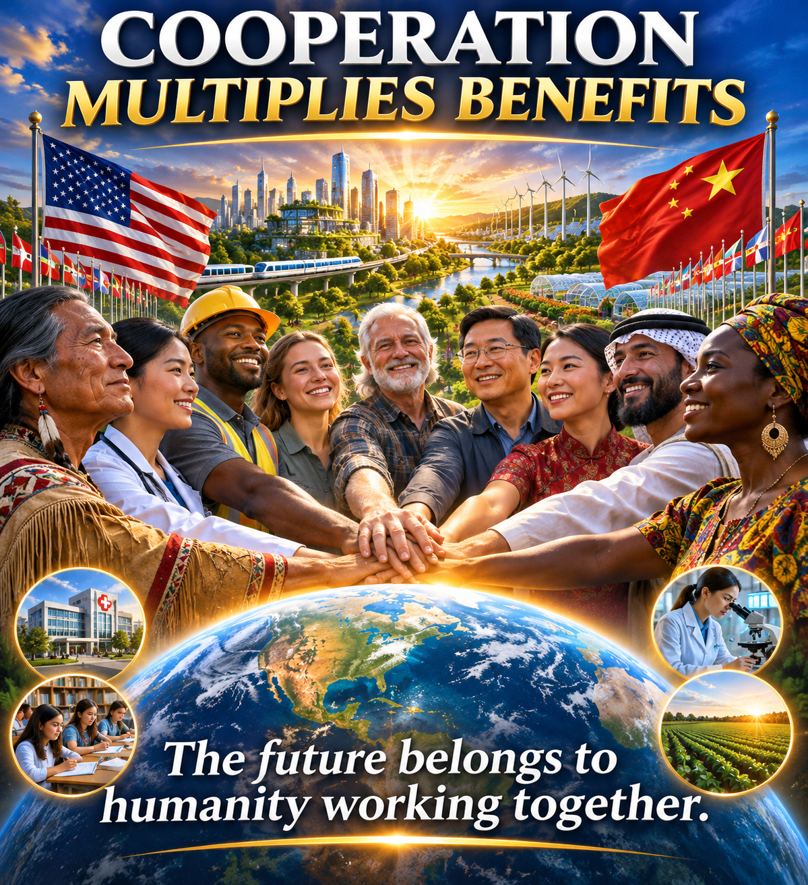

← Terra Nova Development — Article Index
Article #140
Utopia Is Within Reach
We already possess the tools to dramatically reduce needless human suffering and build a better civilization.

We Already Have the Tools to Build a World Beyond Needless Suffering
The Future We Can Choose
I believe humanity can eventually build a civilization so much more just, secure, healthy, peaceful, and abundant than the present one that our descendants may reasonably call it utopia. That is not a prediction of a flawless planet or a life without grief. It is a conviction that most of the misery we now accept as ordinary is not a permanent feature of human existence.
We already know how to grow food, purify water, construct durable homes, teach at a distance, prevent and treat many diseases, generate electricity, and move information across the world in seconds. We have the tools. The great unfinished task is to make their benefits dependable and accessible to everyone.
And while we debate how to organize what we already possess, new discoveries arrive continually. Technology is not standing still. We need not wait for the next invention to begin, but tomorrow’s inventions may make the task easier still.
1. Utopia Is a Direction, Not a Magical Destination
The word “utopia” often ends a conversation before it begins. People imagine an impossible society where everyone agrees, nobody makes mistakes, and no difficult choice ever arises. No responsible plan should promise that.
Instead, define the goal in practical human terms: no one needlessly hungry; no one without a safe place to sleep; essential healthcare accessible; education open throughout life; clean water and sanitation reliable; communities secure; differences resolved without violence; and each person free to contribute according to ability and interest.
These conditions are demanding, but they are not supernatural. They are engineering, economic, social, and political objectives. The proper question is not whether perfection is possible. It is whether we can design institutions that deliver far better outcomes than those we have inherited.
2. We Do Not Need to Wait for New Technology
Consider food. Modern agriculture, storage, transportation, and data systems can support enormous production. Hunger persists because of poverty, conflict, weak infrastructure, waste, and unequal access—not simply because humanity lacks the scientific ability to produce food.
Consider housing. We know how to build safe dwellings, renovate underused buildings, manufacture components efficiently, and plan communities. The obstacles include land use, financing, construction capacity, local resistance, and the gap between household incomes and prices.
Consider healthcare. Existing vaccines, diagnostics, medicines, trained professionals, and telehealth tools could prevent or relieve substantial suffering if organized and financed for broad access. Education is similar: digital libraries, recorded courses, inexpensive devices, and global communications can bring high-quality learning to places once isolated from it.
None of these systems runs without money, labor, energy, maintenance, or governance. But the essential know-how exists. The challenge is no longer to invent civilization from nothing. It is to distribute its benefits intelligently.
3. Our Institutions Have Fallen Behind Our Capabilities
For centuries, institutions developed around scarcity, slow communication, limited medical knowledge, and the need for immense amounts of human labor. Many still operate as though those conditions have not changed.
We sometimes reward organizations for controlling access rather than improving outcomes. We allow useful goods to be discarded while neighbors lack essentials. We duplicate research and infrastructure because institutions compete for advantage. We make people navigate fragmented systems to receive help that could be coordinated.
This is not proof that every market or competition is harmful. Competition can reveal better methods and discipline costs. But it becomes deficient when rivalry, exclusion, or profit extraction prevents us from achieving the human objective. Cooperation should be the default wherever it produces better results.
The next great advance may therefore be organizational: designing systems around the actual needs of people, measuring whether those needs are met, and revising anything that fails.
4. Technology Keeps Expanding the Possible
Artificial intelligence is already assisting with translation, coding, research, tutoring, logistics, and the analysis of complex information. Robotics can take on dangerous or repetitive tasks. Advances in energy storage, materials, medical science, and manufacturing continue to open new options.
We cannot assume every new invention will arrive on a predictable schedule, or that it will automatically improve lives. Some technologies fail, introduce risks, or concentrate power. Yet the overall pace of experimentation gives us reason for hope.
We should be preparing public institutions, communities, and businesses to use each useful advance responsibly. That means safety testing, transparency, workforce transitions, privacy protections, and access that does not leave vulnerable people behind.
The remarkable point is this: our utopian ambition does not depend on a breakthrough that may never happen. Breakthroughs are potential accelerators, not prerequisites.
5. Cooperation Is the Great Multiplier
Article #139 argued that cooperation between America, China, and every other nation can produce more human benefit than unnecessary rivalry. Utopia requires extending that principle from diplomacy into the design of civilization.
When one nation discovers a better way to build a train, another should be able to learn from it. When a university develops an effective treatment, responsible international partnerships can help patients elsewhere. When a community finds a successful approach to housing or food distribution, that knowledge should travel.
Cooperation does not require abandoning security, human rights, or accountability. It requires distinguishing genuine risks from reflexive opposition and recognizing that no country owns all the answers.
The world is not a contest to see which nation can remain on top. It is a shared home whose future depends on the combined intelligence and effort of its inhabitants.
6. Abundance Must Become a Human Experience
It is not enough to say that a nation is wealthy or that global production has increased. A civilization is successful when people experience the benefits in their everyday lives.
A child needs nourishing food, not a statistic about agricultural output. A family needs an affordable home, not a national construction forecast. A patient needs timely treatment, not merely a breakthrough announced in a scientific journal.
Terra Nova Development’s proposed Give and Take Community Centers and SALUDOS network express a practical idea: make useful resources and basic assistance available in welcoming community spaces. Terra Nova University imagines lifelong learning accessible across the world. Other projects explore more efficient healthcare and housing.
Each proposal would require real budgets, management, evaluation, and revision. But each begins with the same question: What would we build if we designed for human flourishing instead of merely preserving familiar institutions?
7. The Work Is Moral as Well as Technical
No machine can decide what a civilization ought to value. We must choose that ourselves.
We can use advanced tools to create surveillance, exclusion, and conflict, or we can use them to extend knowledge, freedom, health, and opportunity. The difference lies in our values and institutions.
For those who understand life through faith, improving the world can be seen as a response to the gifts of our Creator. We were not given intelligence, imagination, and compassion merely to endure preventable suffering. We can use those gifts to care for creation and for one another.
Justice matters because abundance without fairness can leave people behind. Freedom matters because a comfortable society without human agency is not utopia. Truth matters because systems cannot improve when failure is hidden. Love matters because the people we serve are not abstractions.
8. A Practical Path from Here to There
Begin by measuring what matters: homelessness, hunger, preventable illness, educational access, clean water, energy reliability, social trust, and opportunity. Establish transparent local baselines and track whether interventions actually improve them.
Next, pilot solutions. Renovate buildings for housing where feasible. Establish community-sharing centers. Expand affordable connectivity and tutoring. Integrate preventive healthcare with accessible follow-up. Use technology to simplify administration rather than burden the people seeking help.
Then scale what works, retire what does not, and share results openly. Build safeguards against corruption and unintended consequences. Invite criticism. Include the people most affected in the design and evaluation of services.
This is not an overnight revolution. It is a disciplined, continuous process of replacing needless suffering with better systems. We can begin now, with the resources and knowledge already available.
9. Why the Future Can Be Brighter Than the Past
Our ancestors faced hardships we can now prevent or alleviate. That is evidence that human conditions can change profoundly. It is also a reminder that progress is neither automatic nor evenly distributed.
We will still face natural disasters, grief, disagreement, mistakes, and difficult trade-offs. But we can become better at preventing avoidable harm, responding quickly, and rebuilding together.
Every new generation can inherit better tools and better institutions than the one before. The goal is not to freeze history at a perfect moment. It is to make improvement a permanent feature of civilization.
Utopia, understood this way, is not a fantasy of no problems. It is a society that refuses to accept solvable problems as eternal.
Conclusion: The World We Could Have
The future of humanity does not have to be a continuation of the old struggles with more sophisticated machines. It can be a fundamental change in how we organize our lives.
We already possess enough knowledge to begin a transformation in housing, food security, education, healthcare, energy, and community support. New technologies will continue to offer additional possibilities, but the decision to cooperate and act belongs to us today.
We do not need to wait for permission from history. We do not need to invent a new human nature. We need to align our institutions with the compassion, intelligence, and practical capabilities humanity already possesses.
I believe a world approaching full-fledged utopia is within reach—not because progress is guaranteed, but because the path toward a far better civilization is visible and we have the power to begin walking it.
There is no them. There is only us. And together, we can make this existence everything it can be.
Terra Nova Development • Article #140